Kitserver 6 Manual
1.1 Introduction
Kitserver 6 is an add-on program for Pro Evolution Soccer 6 and Winning Eleven: Pro Evolution
Soccer 2007.
It is a loader and manager for various modules.
Kserv Module 6.6.4 was historically the first module implemented (that's
where Kitserver got its original name from). It provides an alternative way of managing players and goalkeeper kits
outside of the game's AFS file: you organize the PNG or BMP kit images into an external
database, which is basically a collection of folders and files that follows few simple rules.
Also, you are not restricted to just 1st and 2nd kit for each team - you can have as many as you like.
NOTE: Those who have some experience with editing previous versions of Pro Evolution Soccer
or Winning Eleven, know that every team used to have kit slots in 0_text.afs. In PES6,
however, only "licensed" teams have the slots, which makes it pretty much impossible to
import kits for "unlicensed" teams by editing the AFS.
With Kitserver, however, there is no such limitation, so you can have the kits for all
teams - licensed and unlicensed!
The BallServer Module 6.6.4 does similar things to KitServer, it offers the
possibility of chosing a ball from the GDB. Of course it is possible to store
as many balls as you like. You can use different texture sizes for the balls: standard - 256x256,
and also 512x512 and 1024x1024.
LOD Mixer Module 6.6.4 allows to make some tweaks to the graphics engine of the game, such
as Level-of-Detail ajustment, crowd-fix, automatic aspect ratio correction, as well as choosing
some locked parameters for Cup/League/ML/Online modes - such as how full the stadium should be,
for example.
If you want to use additional stadiums, take a look at Stadium Server 6.6.4.
With it, you can organize your stadiums in GDB and again have as large collection as you wish,
only limited by your hard disk space. Another benefit of using Stadium Server is that you can pick the stadium
in situations where the game itself doesn't offer you such an option: for example in league, cup
modes or during online matches.
Faceserver Module 6.6.4 controls players faces and hair. You can assign a face BIN and a hair BIN
to any player, so potentially every single player in the game can have his own face/hair! (If you
have a big hard drive of course).
Due to popular demand, we have also created Bootserver Module 6.6.4 module, which allows you to
assign each player his own boots. With bootserver, you are no longer limited
by 9 slots for boots that the game offers.
AFS2FS Module 6.6.4 module allows you to organize your
patches into folders and files, instead of inserting them into AFS-files. This
way, you can quickly add/remove patches, and also never worry about needing
to re-build AFS, because of lack of space for a particular BIN.
However, with only Kitserver itself installed you will not see the
right kits, faces, balls and so on. For that you will need to fill your GDB with the right graphics
and files. Read this manual to know how you can insert them. Then look around the web and get the
files you want. There are also some very big patches which already offer you a filled GDB.
1.2 Installation
As usual: copy the entire kitserver folder into your game folder, so
that the directory structure looks like this:
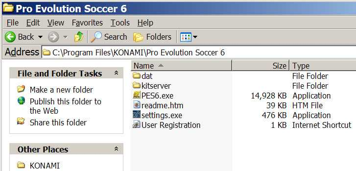
Go to kitserver folder and run setup.exe. The "PES6.exe" in the
drop-down list should be pre-selected. If not, select whatever executable
you use as your game executable.
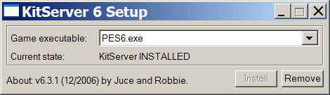
If you placed the kitserver files correctly, the "Install" button should
become enabled, so just press it.
The kitserver should show a message box saying that the installation
was successful. (If you get an error message, make sure that you
not currently running the game, and that the PES6.exe file is not
marked as read-only)
For information how to disable/re-enable individual modules, see "Advanced
Configuration" at the bottom of the manual.
1.3 Removal
Go to kitserver folder and run setup.exe. The "PES6.exe" in the
drop-down list should be pre-selected. (Select it, if not so).
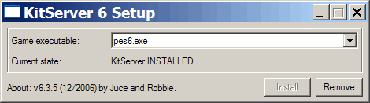
Press "Remove" button.
The kitserver should show a message box saying that the uninstallation
was successful. You can now delete the whole kitserver folder, if you
want. (Or you can leave it there - it won't do any harm, and you'll be able to quickly
re-enable kitserver later, if you run setup again and press "Install" button.)
1.4 Kitserver actions and hot-keys
Certain actions that Kitserver performs need to be triggered or initiated by the user.
Starting from version 6.2.1, both keyboard and gamepad controllers are supported. Different
modules of Kitserver use different "action triggers", but there's a fixed set of actions
that the modules utilize. Typically, the same hotkeys can be and are re-used by different
modules, unless there is a conflict between them.
Here is the list of actions and default bindings for keyboard and gamepad:
Standard Keyword/Gamepad bindings are fixed, however the "Extra" keyword
bindings can be remapped, using keybind.exe program:
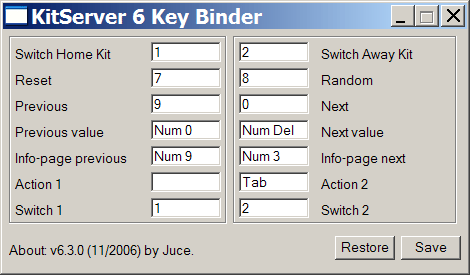
Kserv Module 6.6.4 (kserv.dll)
2.1 GDB organization
The GDB contains a folder named uni, which is responsible for storing
the team kits (uniforms). The single most important file inside uni is called map.txt.
This file tells kitserver where to find the kits for particular team. As you know, each team
has a unique id - a integer number from 0 to 203, i think. So
for every team in the GDB, you must specify in the map.txt, where the kits are for this team.
Here is an example:
# This config maps team number into folder name
# Format: <team-num>,"<folder name>"
# Example: 21,"Russia"
8,"National\France"
9,"National\Germany"
65,"EPL\Aston_Villa"
74,"EPL\Man Utd"
76,"EPL\Newcastle"
IMPORTANT: Double quotes are required - just so that there is no ambiguity about
folder name. For IDs for all the teams - see
uni.txt file
Please note that the sample GDB (provided with kitserver) is just one possible way of organizing the teams and
folders. It uses "EPL" folder to group all english teams, "National" - to group all national
teams, and so for. You may find that you just prefer a flat list of folders - without these
extra groups. In that case, just modify the map.txt file accordingly, and create
the structure of folders that you prefer. That's the main advantage of having map.txt - the
flexibility of kit organization.
You can see from map.txt above that in order to find a kit for team #8, the kitserver needs to go to the
folder GDB\uni\National\France. This folder will contain all of the kits that are
available to team #8. Inside it, you must create an individual folder for each kit. Like this:
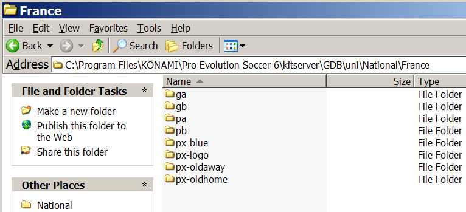
For players, 1st kit must have a folder name pa, 2nd - pb. Extra kits can have
any folder names that start with letter "p". I found it useful to prefix all extra kits with
px-. For example, px-blue. For the goalkeepers, 1st kit must be in the folder
ga, 2nd - in the gb. Extra kits can have any folder names that start with letter "g".
IMPORTANT: Folder name acts as a kind of ID for kitserver, which puts the
additional restriction on all those folder names: they cannot contain spaces, and preferably
they should be relatively short, and in English,French or other language withing Latin1
(iso8859-1) character set. Typically, if you want to make sure kitserver can properly
find/read the folder, just use latin characters, digits, underscore, and the dash (minus sign).
Now let's move on inside one of the kit folders. Take pa, for example.
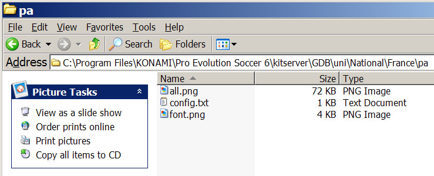
See the table below for explanation of each file:
Images can be either PNG or BMP format. So the filename must have
either ".png" or ".bmp" extensions.
| Reserved PNG file name | Reserved BMP file name | Meaning |
|---|
| all.png | all.bmp | kit texture of arbitrary dimensions. The game uses
512x256 8-bit paletted textures with 32-bit palette entries (24bit color + 8bit
alpha transparency). This format is supported by kitserver, however it is not the
only one. You can also use TrueColor images (32bit RGBA) of other dimensions, such
as for example 512x512, 1024x512, 1024x2048, and so for.
|
| font.png | font.bmp | 256x64 image with font for displaying player names on the back
of the shirt |
Note to kitmakers and users: when choosing the dimensions for your kits, be aware that the
kitserver will attempt to create the textures of the same size as that of the images,
so make sure you video card supports such textures. Going beyond 1024 pixels in either
dimension may severly affect overall performance of the game, and also visually it's
hardly going to make much difference, so choose the dimensions wisely.
Using "power-of-two" sizes (256,512,1024,and so on) is always beneficial, because the
videcard can process them most efficiently. Many new cards support textures of other
dimensions, but they may work slower, because most GPUs are optimized for power-of-two
sized textures. Starting with version 6.3.6, kserv module will try to "gracefully degrade" the kit
quality, if the videocard doesn't support textures of the same dimensions as the kit
image. The closest supported dimensions will be chosen, and image will be resampled
on the fly.
IMPORTANT NOTE TO KITMAKERS: transparency is no longer supported for BMP kits.
It is however fully supported for PNG kits, both "simple transparency"
(8-bit paletted with alpha) and per-pixel transparency in TrueColor RGBA images.
2.2. config.txt
This is the attribute configuration file (in previous Kitservers it was called "attrib.cfg").
As before, it is just a plain text file - you can use Notepad or any other text editor to
view or modify it. For each folder, you should have a config.txt file in it.
Here's the summary table of all the supported attributes:
(the highlighted attributes were introduced with version 6.5.0)
| Attribute name | Meaning | Format | Example |
|---|
| model |
identifier for 3D-model of the shirt |
decimal integer |
model = 37 |
| collar |
Presense of collar |
yes/no |
collar = no |
| numbers |
Filename (with path, relative to kit folder) of the image that contains
numbers texture: 256x128 4bit/8bit paletted image |
string in double quotes |
numbers = "..\num-white.png" |
| shorts.num-pal.X |
Filename (with path, relative to kit folder) of the image that contains
numbers palette: a 4bit/8bit paletted image. The "X" must match the kit
folder name. (So, for config.txt in pa folder, you must have an
attribute shorts.num-pal.pa in it.) |
string in double quotes |
shorts.num-pal.pa = "..\pal-black.png" |
| shirt.number.location |
Where on the front of the shirt the number should be placed. ("off" means the number
will not be displayed at all.) This only applies to national teams.
|
center|topright|off |
shirt.number.location = topright |
| shorts.number.location |
Where on the shorts the number should be placed. ("off" means the number
will not be displayed at all.)
|
left|right|both|off |
shorts.number.location = left |
| name.location |
Where on the shirt the name of the player should be placed. This is useful
for teams like Boca Juniors, who have player names printed at the bottom of the
shirt. ("off" means the name will not be displayed at all.) |
top|bottom|off |
name.location = top |
| logo.location |
Where on the shirt the sponsor logo should be placed. (This attribute
is probably not gonna be very useful with kitserver, since if the
team has the logo on the back of the shirt, it will probably be painted
as part of the kit texture itself, by kitmaker) |
top|bottom|off |
logo.location = off |
| name.shape |
Indicates whether the name should be curved or straight. The values
have the same meaning as in Edit Mode: type1 - straight, type2 - slightly curved,
type3 - curved. |
type1|type2|type3 |
name.shape = type1 |
| radar.color |
This attribute specifies the color you see on the ingame radar. It
also influences the kit that is selected by default after selecting teams,
as PES6 uses it as an indicator whether two kits have similar colors and
would be too confusing together. Be careful: This is also the main color
of standard mini-kits (not 2.5D)! |
color, written in hexadecimal format RRGGBB (red,green,blue) |
radar.color = 0A5D88 |
| shorts.color |
This attribute specifies the color of the player/gk shorts. The color
of shorts is used by the game to determine correct color of the underpants
for those players who wear them, and have them set to match the shorts
color. |
color, written in hexadecimal format RRGGBB (red,green,blue) |
shorts.color = 0A5D88 |
| description |
Any notes about the kit. This text will be displayed on
kit selection screen, under the mini-kit. Useful when there are
several similar kits that have near identical mini-kit rendering
but you want to know which one is currently selected. |
any text in double quotes |
description = "All white (WC2006 Final)" |
| mask |
This is the mask file that will be applied when splitting the kit for
mixing parts. Masks are very important for kit-mixing.
|
string in double quotes |
mask = "pes6_nobadge.png" |
shirt.folder
shorts.folder
socks.folder |
These three attributes allow you to make kserv look for the images in another
folder than that where the config.txt is. Of course they can be used individually
from each other. For more information, look at the kit-mixing
section. |
string in double quotes |
shirt.folder = "pa"
shorts.folder = "pb"
socks.folder = "px-cl" |
| overlay |
This specifies an image which is laid over the texture. Please see
the kit-mixing section to learn more about this. |
string in double quotes |
overlay = "overlay.png" |
For examples of shorts.num-pal.X usage - study the
sample GDB. Here's a config.txt from Germany "pb" folder:
collar = no
logo.location = off
model = 0
name.location = top
name.shape = type3
numbers = "..\..\adidas_blue.png"
shirt.number.location = topright
shorts.num-pal.pb = "..\..\adidas_white.png"
shorts.number.location = left
What this means in plain English is the following:
For the shirt use blue Adidas numbers. Apply palette file "adidas_white.png",
which effectively renders white numbers on the shorts.
2.3 Kit-mixing
Kit-mixing generally means that the kit texture is not one single texture but composed of
multiple ones for the different parts of the kit (shirt, shorts and socks).
The shirt texture has the name shirt.png or shirt.bmp. If none of these is
found, the all.png or all.bmp is used. This texture is used by default also for the
other parts. However, if a shorts.png (bmp can also always be used) or all.png is
found, that one will be taken for the shorts part. The same thing applies to the socks
(socks.png / all.png).
To know what areas of the texture belong to a specific part, kserv needs the mask files.
The kit parts can even have different sizes each (such as 1024x1024 for shirt,
512x256 shorts and 512x512 for socks)!
Masks
Masks are very important for kit-mixing! If you don't use the right mask, the kit will
look messed up. So read this here carefully!
The default mask for kit-mixing is this one:
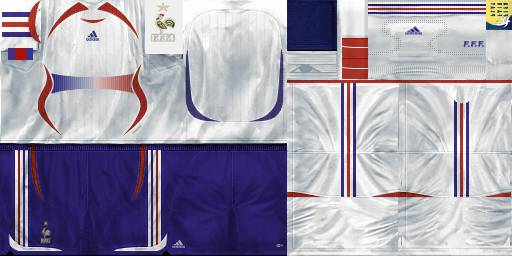
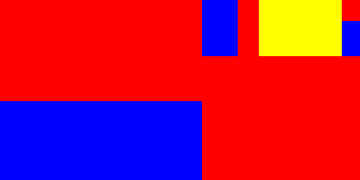
The three colors indicate the areas which belong to shirt (red), shorts (blue) and socks (yellow).
As the shirt is taken as base texture and the shorts and socks areas are mixed into it, there is
only need to color the shorts and the socks areas correctly.
The mask above is used by many
templates. However, there are some models which need a different arrangement of the parts.
You often find this for 512x512 kits. Look at this table to know which
mask you have to use for a specific model number. For example this kit is model 32, so you need
the mask pes6_nobadge.png:
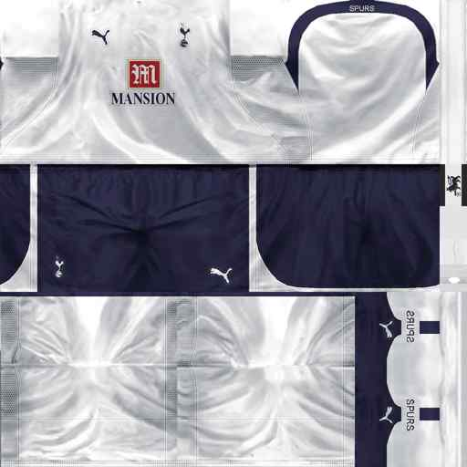

The mask used here is sized 512x256, but it will automatically be stretched to the size
of the kit part. This means that you can use the same mask for differently dimensioned kits:
Yet another mask is pes_badge.png, which you need for example for kits with model
146 (with an emblem in the right corner and smaller socks):
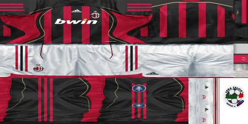
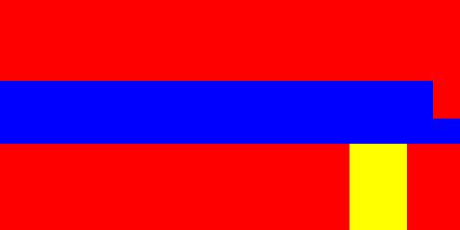
As you can see, these two masks are completly different from the first one. Kserv has to
rely on the mask you specify. If you select the wrong mask, kserv will mix the kits wrong.
But using the the table above, you can find out easily which mask is the correct one.
If you specify the "mask" attribute in the config.txt, the given path will first be seen as relative
to the kit folder (like uni\TeamName\pa), then to the uni\masks folder.
Without the (default) mask file, no kit-mixing is possible! So if you
upgrade to version 6.5.0 or newer, you also have to copy the "GDB\uni\masks" folder.
If you need to create your own mask, please notice that it has to be an
8-bit paletted PNG image. The colors are plain blue and plain yellow.
Different shirt, shorts and socks folders
The idea behind this is that often teams play with the same shirt, but where different
shorts or even only other socks. Until now, kitmaker had to create a new texture for each
of the combinations. Although it would be possible to solve this problem with three textures
for each of the parts, there is a better way: Specify the "shirt.folder", "shorts.folder" and/or
"socks.folder" attribute. If you do so, kserv will look for the shirt.png / shorts.png / socks.png
respectively all.png in that folder. This does NOT affect other attributes. Only the files for
shirt, shorts and socks are looked for in another folder.
So if you specify these three attributes, you will only need the config.txt inside the subfolder.
All textures would be taken from the other folders. For example you could create a folder called
"px-mixed" and create a config.txt where you specify model and so on. Now if you write
shirt.folder = "pa"
shorts.folder = "pb"
socks.folder = "px-cl"
into the config.txt, the shirt will be loaded from uni\TeamName\pa\all.png (for example),
the shorts from uni\TeamName\pb\all.png and so on. Of course kserv will look for the single
images first, so if a file uni\TeamName\px-cl\socks.png exists, that one will be taken.
Afterwards, the kit parts will be mixed using the mask and then you can play with a new combination
without storing a new image in your GDB.
Overlay
Often, teams use the same kits for different tournaments, only with a different
badge on the sleeves or other modifications. To avoid creating to textures, you can
use this option to overlay the texture with another one. The transparency plays a big
part here: only parts of the overlay texture should be used. This is why theses textures
have to be saved either as 32 bit or indexed 256 color images in the PNG format.
As for the mask files, the path is seen as relative to the kit folder and then to the
uni\overlay folder. It can be any png file, but it should (but doesn't have to)
have the same dimensions as the shirt texture.
Here is an example for an overlay image (note that this is NOT an image you can use because it is
in the GIF format. However, you'll find it as 32 a bit PNG in the sample GDB):
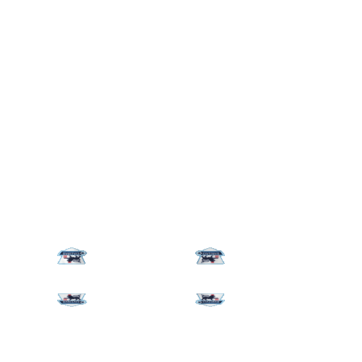
The white parts you see are fully transparent, so only the logos will be visible later.
2.4 Strip Selection and 2.5D kits
In order to provide a visual reference for currently selected GDB kits (including extra kits),
these so-called "2.5D" kits are overlayed on top of the KONAMIs mini-kits. The name originated
from the fact that these are 2Dkits, but they are built with the real textures that are used
in the match. Since this unfortunately turned out to be a very clumsy name, i'm going to refer to them
from now on simply as "mini-kits" instead, and when referring to original ones, i will
say "KONAMI mini-kits". Here's a screenshot:
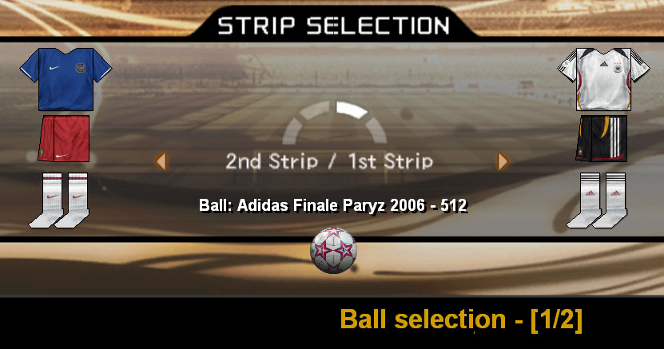
(When the team doesn't have the kits in GDB, the original KONAMI mini-kits will still be visible.)
In Pro EvolutionSoccer 6, KONAMI introduced quite a few different kit texture types, which kitserver
needs to "understand" in order to correctly render the mini-kits. For that, it uses a configuration
file kserv.cfg, which contains a map of how kit models relate to the texture templates:
# Kserv configuration file
HD-kits.enabled = 1
# mini-kits model map.
# Needed only for correct display of mini-kits,
# but doesn't affect the in-game kits.
#
# Note: the map might be incomplete, so feel free to add the model
# numbers to correct groups, if you notice that a mini-kit for
# certain model is rendered incorrectly.
mini-kits.narrow-backs = [8]
mini-kits.wide-backs = [0,9,12,13,51,60,100,101,102,104,105,106]
mini-kits.squashed-with-logo = [18,19,20,21,49,54,61,68,69,70,74,91,115,116,117,118,124,125,126,127,128,129,132,134,137,138,139,140,146,147,148]
# any other other model is assumed to be "squashed-without-logo"
# (meaning the new PES6 model with squashed shirt, but no logo
# in the bottom-right area of the texture.)
# Some examples: 31,71,84,etc.
As stated in the comments, the map is probably incomplete. Which means that if you use
a model that kitserver incorrectly classifies, then the mini-kit won't look right.
To fix that, simply modify kserv.cfg and add that model number to corresponding list.
You can switch between 1st/2nd kits as before - using your keyboard or gamepad - whatever you
have configured. In order to get to the extra kits, use Switch left kit action - to load next extra
kit for home team, Switch right kit action - to load next extra kit for away team.
It is also possible to set goalkeepers kits. There are now 2 modes of kit selection: "Player mode" and
"Goalkeepers mode". You can switch between them by pressing Action 2 hot-key. For goalkeeper,
choose the kits the same way as you did for the players.
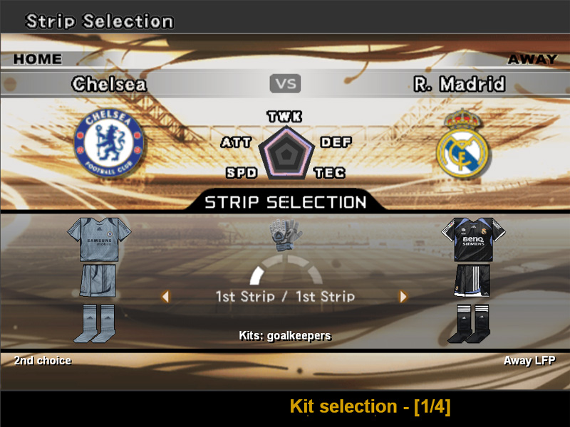
Be aware that Kitserver disables itself in Edit Mode. This is done
on purpose - to avoid crashes in edit mode that had happened in the past with PES5.
Kitserver activates the GDB kits during matches and replays.
2.5. HD-kits flag
In kserv.cfg, you can enable or disable HD-kits. By default the HD (High Definition) kits are
enabled, which means that the kserv module will try to use the textures of the same
size as the kit images in your GDB. If this makes the game really slow, you can
set the HD-kits.enabled flag to 0 to force the kserv module to always use
the standard-size textures (regardless of what the kit image dimensions are):
# Kserv configuration file
HD-kits.enabled = 0
...
2.6 Information pages
In the bottom section of the screen, there might be additional information displayed by
kitserver modules. Since there is not enough space, these are split into pages between which
you can switch using Info-page Previous and Info-page Next actions.
On the picture above, you can see the information page called "Ball selection". The orange text
at the bottom shows the name of the page and also its ordinal in the list of pages and the total
number of available pages.
Ballserver Module 6.6.4 (bserv.dll)
3.1 Quick summary of the features
Ball selection on "Strip Selection" screen.
A 3D preview of the ball is shown. (You can turn that feature off in
the bserv.cfg file, if for some reason this causes problems.)
Support for different texture sizes.
You can use 256x256, 512x512 and even 1024x1024 pixel textures, saved in either
BMP or PNG format. The size is auto-detected, so there's no need to configure it.
Assignment of a "home ball" for each team.
You can tell Ballserver to automatically select a specific ball if you play with team.
3.2 GDB configuration
Ballserver uses the same GDB folder as the other modules like Kitserver. The subfolder is named
balls. You'll notice that there is a file inside called map.txt (like in Kitserver)
to configure the balls. The format is quite simple: one line is one ball, and there are three
attributes. The first one is the name displayed in the ingame selection, followed by the name of
the 3D model file and the texture file. Look at the example:
# This is the configuration file for Ballserver
# Format: "<name displayed in game>","<model file>","<texture file>"
# Example: "adidas Finale Capitano Grey","ariel_mdl.bin","adidas_finale_capitano_grey.bmp"
# Texture paths are relative to GDB\balls\, model paths to GDB\balls\mdl\
# adidas
"adidas Finale Capitano Grey","ariel_mdl.bin","adidas_finale_capitano_grey.bmp"
"adidas Teamgeist Blue","gwidon_mdl.bin","adidas_teamgeist_blue.png"
# Nike
# Puma
# This comment makes sure you have pressed the enter key after the last ball
Please don't forget the quotes, they are important! If your map.txt looks like this (and you have those
files, of course), you can choose between adidas Finale Capitano Grey and adidas Teamgeist Blue
in game later. The texture files have to be stored inside the "GDB\balls" folder and the models in "GDB\balls\mdl".
If you want to use other folders, you have to use relative paths like mysubfolder\tex.png
for a file "tex.png" inside "GDB\balls\mysubfolder".
When downloading balls, you will recognize that quite a lot of balls share one 3D model. In this case, you need
each model file only once. In general, models are independent from the texture size, so a model delivered with a 256x256
texture should work with a 512x512 texture as well. If you're unsure, just try it with different models.
3.3 Home ball assignment
With help of the home_map.txt, you can assign a "home ball" to each team. This means that
if Ballserver is in the "home ball" mode (see section 3.4 for information on selecting this mode)
and you select that team as home team, the "home ball" will automatically be chosen. If you are
in the "home ball" mode but the home team has no ball assigned, a random ball will be chosen instead.
Here is a simple map.txt, with 2 teams having home balls associated with them:
# Ball Server home ball map file
# --------------------------------------------------------------
# This config maps team number into its home ball name
# Please note: the ball name is the first parameter in map.txt
# Format: <team-num>,"<ball name>"
# Example: 8,"adidas Teamgeist Blue"
8,"adidas Teamgeist Blue"
125,"Adidas Teamgeist FC Bayern München White/Red"
Please also look at the format explanations in the first lines, they help you to configure the
home map correctly.
IMPORTANT: Double quotes are required - just so that there is no ambiguity about
ball name. For IDs for all the teams - see
uni.txt file
3.4 Ball selection
Start the game just as usual. When you come to Strip Selection, you will see a new text under the mini-kits saying
"Ball: game choice" by default. In this case, you will recognize no change when playing as the ball you selected in
the options will be used. Now comes the new feature: use Next action to select the next ball,
or Previous - to pick the previous ball from the list.
The text will change into "Ball: <name configured in map.txt>" and if everything is
well-configured, you will play with that ball. To choose a random ball, use Random action
and to reset the ball to game choice - Reset action.
Under the text you can see a 3D preview. It doesn't need any configuration or additional files in the GDB
as it is created from the texture and the model file defined in your map.txt.
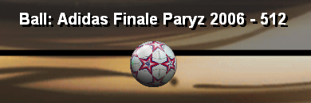
If you don't see the text, you have to navigate to it. The text at the bottom should
say "Ball selection" then.
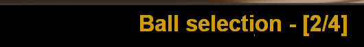
Selection modes
There are two special modes how the ball is selected. You can switch between these using
Reset multiple times. You can see which mode is currently
selected at the color of the ball name:
| The color you see | Meaning |
|---|
| 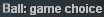 |
The ball selected in the game options will be used. |
| 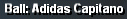 |
Always play with this ball (normal mode). |
| 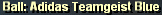 |
Home ball mode for a team with home ball assigned. If you play the next match
with another home team, the ball will automatically change to that team's home ball. |
| 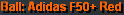 |
Home ball mode too, but for a team without home ball. In that case, a random ball
will be chosen. However, the home ball mode is still active, so if you next team has
a home ball, that one will be used. |
| 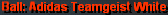 |
Auto-random mode: For each match, a random ball is chosen. |
These modes do not change your current ball. You will play the match with the ball you see
in the preview. However, it has effect on the ball which is chosen for the following match.
LOD Mixer Module 6.6.4 (lodmixer.dll)
4.1 How to use
LOD Mixer allows to do
some tweaks to the graphical engine of the game, such as Level-Of-Detail table adjustment,
enable the crowd on all cameras, enable automatic aspect ratio correction. You can also
control some other aspects of Cup/League/ML/Online modes - for example you can set the
spectator attendence to 3 stars for both home and away teams, which will result in full
stadiums for every game.
Run lodcfg.exe to configure the LOD Mixer settings. Here's the screenshot of how that
looks:
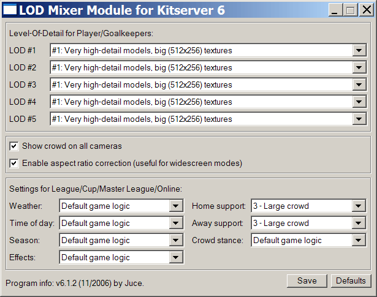
For complete documentation and a brief explanation of what the "LOD" is, see this file:
lodmixer.txt
You can change some of the lodmixer settings also ingame if you choose
the corresponding page in Strip Selection (see instructions here):
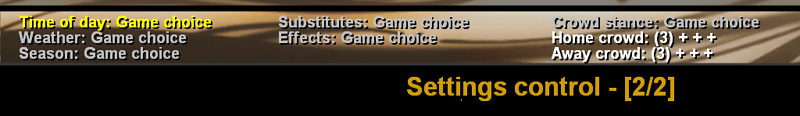
The controls are quite simple: With the Previous and
Next hotkeys, you choose the setting
you want to change. Previous value and Next value actions
let you can change the value. The configuration is saved automatically.
Stadium Server Module 6.6.4 (stadium.dll)
5.1 Introduction
Stadium Server is a plug-in module for Kitserver. It allows to use additional stadiums, which
are organized inside GDB - similar to how kits, balls, and faces are organized.
5.2 GDB organization
This section is mainly for the stadium creators, so that they can organize their stadiums
in the way that stadium server requires. For the user, installing a new stadium would then be
very easy: it would just mean a simple folder copy.
To add new stadiums to the game, you need to organize them in the GDB in specific way.
The GDB now has a new folder called stadiums, which holds all the extra stadiums:
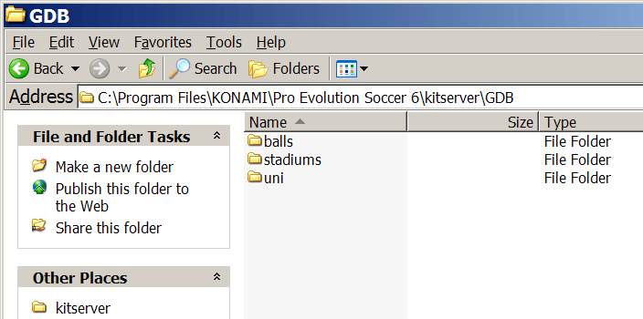
Inside the stadiums folder, each stadium has its own folder.
For example, you can see 2 stadiums here (the map.txt file will be discussed later):
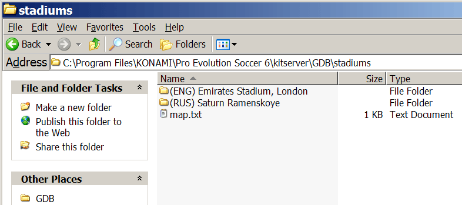
IMPORTANT: The name of the folder will be used by Stadium Server as the name of the stadium, during
both the matches and in "View Stadiums" mode.
Inside each stadium folder the directory structure is always the same. Each stadium consists of 69
files: 66 files for the stadium itself + 1 adbords textures BIN + 1 information file
(info.txt - the year the stadium was built, its capacity and the city are stored in it) + 1 stadium preview image
(preview.png - 128x64 texture). The 66 stadium files
are split into 6 folders - one each for the following scenarios of stadium usage: fine day, rainy day,
snowy day, fine night, rainy night, snowy night. The folders are called:
1_day_fine, 2_day_rain, 3_day_snow, 4_night_fine, 5_night_rain,
and 6_night_snow. The adboards textures BIN is stored in a folder called adboards_tex.
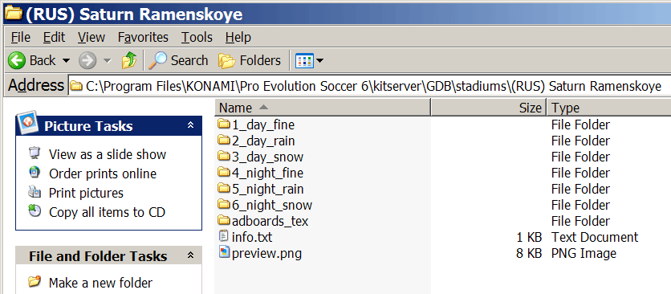
The info.txt has a very simple structure. You specify the year the stadium was built,
its capacity and the city were it is like in the example below:
# Stadium info file
built = 2006
capacity = 60432
city = London
Inside each of the 6 stadium folders, the files have the same fixed names indicating what part
of the stadium they contain. (It's important that you name the files in each of the 6 folders, EXACTLY as shown the picture,
because otherwise stadium server won't be able to load the stadium correctly).
For example, here's the contents of 1_day_fine folder:
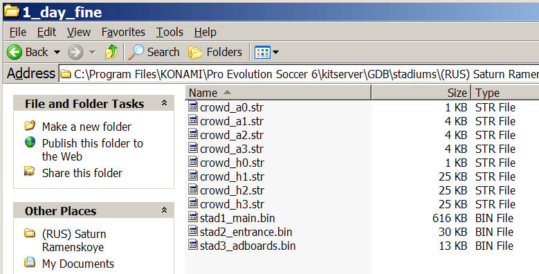
Some notes by Gwidon about what each file contains:
| File | Comments |
| crowd_a0.str |
away crowd and flags, when there are no away supporters (0-star) |
| crowd_a1.str |
away crowd and flags, when stadium has some small number of away supporters (1-star) |
| crowd_a2.str |
away crowd and flags for good amount of away supporters (2-star) |
| crowd_a3.str |
away crowd and flags for maximum number of away supporters (3-star) |
| crowd_h0.str |
home crowd and flags, when there are no home supporters (0-star) |
| crowd_h1.str |
home crowd and flags, when stadium has some small number of home supporters (1-star) |
| crowd_h2.str |
home crowd and flags for good amount of home supporters (2-star) |
| crowd_h3.str |
home crowd and flags for maximum number of home supporters (3-star) |
| stad1_main.bin |
Main stadium file, with textures and models |
| stad2_entrance.bin |
Entrance scene |
| stad3_adboards.bin |
Adboards structure |
The adboards_tex folder for now contains a single file - default.bin, which
holds adboards textures to be applied to stadium adboards during the game. (In the future, this
folder might contain other texture BINs, so that we can use different adboards during different
types of matches... But that's a feature that is not here yet.)
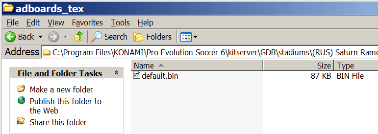
5.4 map.txt
The map.txt in Stadium Server is used slightly differently compared to other modules
(such as Kitserver or Ballserver, etc.). To use a GDB stadium in the game, you don't necessarily
need the map.txt file. However, what it allows to do, is to define a "home stadium" for a team.
Then, whenever the Stadium Server is in the "home team" mode (you can turn it on/off by pressing
Reset hot-key), it will determine which team is the home team, and try to load the corresponding
stadium from GDB. Here's a simple map.txt, with 2 teams having home stadiums associated with
them:
# Stadium Server map file
# --------------------------------------------------------------
# This config maps team number into its home stadium folder name
# Format: <team-num>,"<folder name>"
# Example: 45,"Maracana"
21,"(RUS) Saturn Ramenskoye"
64,"(ENG) Emirates Stadium, London"
IMPORTANT: Double quotes are required - just so that there is no ambiguity about
folder name. For IDs for all the teams - see
uni.txt file
5.5. Modes of operation
During the Strip Selection screen, you will see a text showing the currently selected
stadium (or stadium mode), and you can use the following actions:
Reset,
Random,
Previous,
Next.
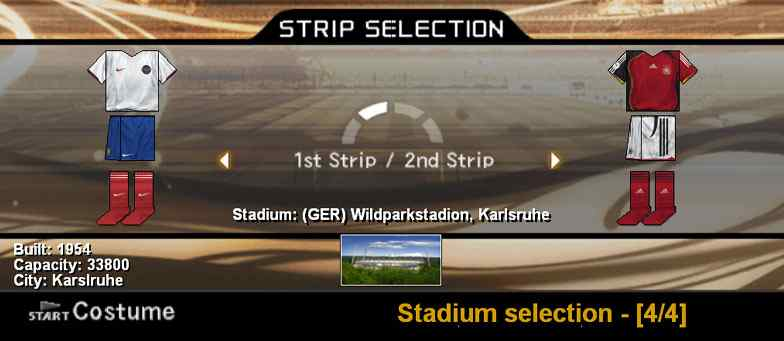
Stadium Server basically has 2 modes of operation, where it will load the stadiums from the
GDB: "selected stadium" mode and "home team stadium" mode. Using Previous and
Next hot-keys, you can move back and forth among available GDB stadiums,
pick a random GDB stadium with Random. Pressing
Reset hot-key, you alternate between "game choice" and "home
team stadium" mode. If "game choice" is selected - the stadium from the AFS is used.
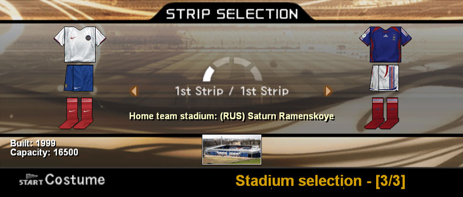
5.6. "View Stadiums"
You can view all of your GDB stadiums in the "View Stadiums" mode of the game. To do that,
simply use Switch 1 action. To choose the weather, use
the Switch 2 action.
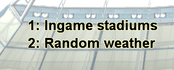
NOTE: Currently only keyboard hotkeys are supported
in "View Stadiums" mode. Gamepad doesn't work.
FaceServer Module 6.6.4 (fserv.dll)
6.1 Introduction
Faceserver is similar to Kitserver and Ballserver, making it possible to load as
much extra faces and extra hair from the GDB as you want. Faceserver makes use
of unique ids, which are assigned to each player. As these aren't saved with replays
and a team you can export from the master league, it can't work in these situations.
A new module to fix this is under development, but not finished yet. To avoid messed
up faces when watching replays in museum, Faceserver will disable itself in that mode.
6.2 How to use
Go to Edit Mode to see how the faces look, and to find out the ID
numbers for the players that you want to insert faces/hair for.
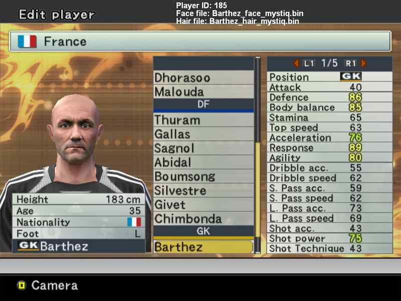
Shown on screenshot, the face and hair for Fabien Barthez were made by Mystiq.
Notice at the very top of the screen, the text that says Player ID:. Every player
will have a unique id shown there. To add a face to a player, remember the id and go to your GDB\faces folder. Copy the face there (extract
it before to a bin file if you downloaded a zip file!) and open the map.txt with
notepad. Add a new line after the sample, using the format given in the comment in the upper
part (the player's id followed by the filename in double quotes). The filename is relative to
"GDB\faces", so you can use subfolders (for facepacks or the different teams, or what you like).
In the Ballserver manual you find an example for that.
That's it. When play the game now, the player will have the face you assigned. To check this,
go back to edit mode and look at the top. When you select a player with a new face, the filename
is displayed. Don't worry about the fact that the face is not shown when you edit a player.
This just shows that it is not saved in your optionfile. In the game you will see it properly.
The way to assign new hair to a player is very similar: Find out the player's id, copy the hair
file to GDB\hair and open GDB\hair\map.txt. The format is exactly the same as for faces,
so look above how to insert a line for the player. Save the file and start the game. If you did
everything right, you will see it in edit mode at the same place as the face filename.
Most crashes are caused by corrupted files or wrong map files. In case of a crash
please check first if this is the reason before posting in the forums.
For players with buzz-cut hair files, you may need to change the transparency to make it
look alright. That's just like the "Darkness" setting when editing the player's hair. For that
purpose, you can add a third parameter to the hair map:
195, Henry, 128
This parameter can be 0-255, where 255 is the default and means full opaqueness, whereas
0 stands for complete transparency. Just experiment a bit with the values to find the
one which looks best for you.
Bootserver module 6.6.4 (bootserv.dll)
7.1. Introduction
The idea of Bootserver is similar to Faceserver: you use a map where you assign
boot images to playes, using player IDs. This allows to overcome the limitation of 9 slots that
the game has for boots - with bootserver, each player can have his own boots. As with faceserver, the bootserver currently doesn't work in Museum Replays,
although ingame instant replays, highlights, and other cut-scenes are fully supported.
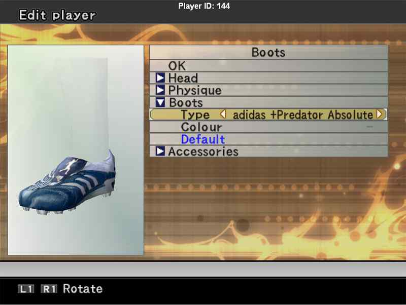
Similar to other modules that use map.txt, you put a player ID and the filename
for the boot texture on one line, separating them by a comma. You can find out the ID for
each player in the Edit Mode: the Player ID: text will be displayed at the top of
the screen. Texture filename needs to be a pathname relative to GDB\boots, so you can
organize your boots into subfolders if you want, or just have a flat structure with all boots
placed in the "boots" folder itself. It's up to you.
Here is an example of simple map:
# Bootserver map
################
185,"adidas_00.png" # Barthez
186,"adidas_01.png" # Thuram
194,"puma.png" # Zidane
195,"adidas_02.png" # Henry
217,"Germany\adidas_yellow.png" # Klose
1791,"adidas_00.png" # Davids
7.2. "Random boots" setting
Bootserver configuration file (bootserv.cfg) contains a setting called random-boots.enabled, which
allows to activate random selection of boots for those players, who don't have a GDB boot assigned
in map.txt. So say, for example, you have a large collection of boot textures, but you don't
fancy writing a long map.txt, specifying boots for hundreds if not thousands of players. Instead
you can just assign boots to a limited number of players that you really care about (players of your Master League team, for example) and let bootserver choose the boots randomly
for all others. This random choice will occur every match, so it's likely that a player without
specific boots assigned in map.txt, will wear very something new every time.
By default, this option is disabled (set to 0). To enable it, just change its value
to 1 in bootserv.cfg:
random-boots.enabled = 1
7.3. Switching between implementation algorithms
Bootserver module actually contains two different implementations. Both accomplish the
same task, but using different means. We have included both of them in this release of bootserver
to increase the chance of providing correct behaviour for everyone. In other words, if everything
works fine for you "out of the box", you don't need to worry about this and can stop reading now.
If, however, you notice a problem - perhaps a significant slowdown during the match, or a situation,
where GDB boots should be displayed but aren't, you can try to switch to alternative implementation,
and see if that helps your case. You can do that by modifying the otherVersion option in
bootserv.cfg file. Here's how it looks by default:
# bootserver configuration file
random-boots.enabled = 0
otherVersion = 0
Setting otherVersion to 1 will switch the way bootserver works internally. A few words
on the difference between the two. You will need to know this, if you decide to try changing it.
otherVersion = 0
This is the default mode of operation. Bootserver uses a new algorithm to determine which texture
is being processed by the game engine and replaces it accordingly, if it's a boot texture. We decided
to make this the default mode, because it uses a more generic approach than the other implementation,
and can potentially be used in the future for other textures that each player has (such as kit,
hair,face,etc.). Also, it doesn't require any modifications to your current boot setup (See next
section for more details on that.)
otherVersion = 1
This activates the alternative algorithm in bootserver. It's simpler and less generic, but is also
"lighter", meaning that it introduces less additional overhead for your PC to process, which
may result in smoother frame rate. In order for this implementation to function
properly, you need to go to "Edit Boots" menu in Edit mode, and set the Type 1 to
"Editable" boots. (One easy way to accomplish this is to reset all boot types to Default).
AFS2FS Module 6.6.4 (afs2fs.dll)
8.1. Introduction
This module allows to organize your BIN-files into folders on disk, instead of inserting them into AFS (*.afs) files, which is sometimes a pain, and may require a lot of extra disk space.
AFS2FS from Kitserver 7 and 8 proved to be a popular tool, so it made sense to *backport* the functionality into Kitserver 6 also. The basic idea to organize BINs into folders that would mirror the game *.afs files, was brought up by several people in the community, so by now it is really hard to attribute it to someone specific. (Although Str@teG was the one who finally convinced me to implement it). From personal experience, i know that people are sometimes reluctant to install big patches that require an AFS-rebuild, not because it's particularly difficult or anything, but because it can be time-consuming and disk-space-hungry. With afs2fs, this is now very easy: you just put the BIN into correct folder and that's it. And, of course, there are no size constraints - the bins can be as large as needed!
Another useful feature (which is unique to this version to AFS2FS module, and does not exist in kitservers for later versions of the game), is that multiple root folders are supported, which makes it really easy to manage multiple patches: you can install/uninstall them by dragging the folders and/or modifying the afs2fs.cfg configuration file. You can re-order them if needed, in case of the overlap in content. See the section called "AFS root folders" below for more details.
8.2. How to set up the folders
Let's start with the simplest scenario. In kitserver folder, there should be a dat folder - if it's not there, create it, and then inside "dat", create folders, as needed, named - 0_text.afs, 0_sound.afs, e_text.afs, and so for. That's where you're going to be putting the BIN-files.
It's important to name the folders correctly: a folder must have exactly the same name as the corresponding AFS-file. For instance, if you call a folder 0_text, instead of 0_text.afs, things will not work.)
8.3. How to name the files
In general, you can name the files whichever way you want, but you must follow one rule: there must be a BIN number in the name, and it must be preceded by an underscore character ('_'). Also, the filenames CANNOT be longer than 63 characters.
Examples of correctly named files:
unknown_6844.bin
ball_7.bin
unknow_8 (.bin extension is optional)
music_104.adx (a file can have a different extension: .adx is typically used for music and sound files)
Examples of incorrectly named files:
unnamed10.bin - no underscore symbol before the BIN number.
face.bin - no BIN number.
8.4. AFS "root" folders
By default, the AFS2FS module expects to find the dat folder inside the kitserver folder, which serves as the single default AFS root. However, it is also possible to have a more flexible configuration. In afs2fs.cfg file, you can speficy the location of your root, which can be anywhere on your hard disk. You can also have multiple roots, which is very useful if you have several patches, and you don't want to lose track of which BINs came from which patches (so that you can easily uninstall a patch by just deleting its root folder).
Here is an example afs2fs.cfg file, where 3 different roots are configured:
# AFS2FS configuration
afs.root = "c:\mypes6patch"
afs.root = "dat"
afs.root = "patch-RPL"
The order of them is important only if there is overlapping content. Let's say for example that patch-RPL and mypes6patch both have bin #7 for 0_text.afs. (The files themselves can actually be named differently - for example: ball_7.bin and unknown_7, but what matters is that they define the same BIN). In this case, the file coming from the last root gets used - in this example, it will be the BIN from patch-RPL.
Advanced configuration
9.1. Master configuration file: kload.cfg
Typically, you wouldn't need to modify that, unless you're running into problems, or
want to manually enable/disable individual modules. For example, if you wish
to use the lodmixer, but don't really want the kitserver module, you can
do that by modifying the kload.cfg file. Here's how the default config looks:
# Loader configuration file
gdb.dir = ".\"
ReservedMemory=55000000
DLL.num = 11
DLL.0 = "kitserver\zlib1.dll"
DLL.1 = "kitserver\libpng13.dll"
DLL.2 = "kitserver\afs2fs.dll"
DLL.3 = "kitserver\kserv.dll"
DLL.4 = "kitserver\bserv.dll"
DLL.5 = "kitserver\lodmixer.dll"
DLL.6 = "kitserver\dxtools.dll"
DLL.7 = "kitserver\stadium.dll"
DLL.8 = "kitserver\fserv.dll"
DLL.9 = "kitserver\bootserv.dll"
DLL.10 = "kitserver\psc.dll"
# DirectX options
dx.force-SW-TnL = 0
dx.emulate-HW-TnL = 0
#dx.fullscreen.width = 1920
#dx.fullscreen.height = 1200
The top two DLLs - zlib1.dll and libpng13.dll are needed for PNG
image support. Do not remove those. The other ones are independent modules, which you
can enable or disable at will. For example, to disable kitserver module (kserv.dll),
just comment it out with a "#" symbol at the beginning of the line:
DLL.num = 11
DLL.0 = "kitserver\zlib1.dll"
DLL.1 = "kitserver\libpng13.dll"
DLL.2 = "kitserver\afs2fs.dll"
#DLL.3 = "kitserver\kserv.dll"
DLL.4 = "kitserver\bserv.dll"
DLL.5 = "kitserver\lodmixer.dll"
DLL.6 = "kitserver\dxtools.dll"
DLL.7 = "kitserver\stadium.dll"
DLL.8 = "kitserver\fserv.dll"
DLL.9 = "kitserver\bootserv.dll"
DLL.10 = "kitserver\psc.dll"
With ReservedMemory, you can increase the size of memory which is reserved by PES6. This
fixes some crashes with HD adboards, big stadiums and high-resolution crowd. If this line is missing,
nothing is changed and PES reserves its standard 40 megabytes. You cannot set the limit below this
value, if you do so this will be ignored.
The dx.force-SW-TnL and dx.emulate-HW-TnL options provide functionality similar to
what 3DAnalyzer does with its "Force SW TnL" and "Emulate HW TnL Caps" settings. If your game
crashes (because of an old graphics card, or some other compatibility issue), and you cannot run
the game with 3DAnalyzer, try these two options - they might be all you need to get the game
working again.
To enable, just change the values from 0 to 1.
The last two options - dx.fullscreen.width and dx.fullscreen.height - can be used
to enforce custom resolution in fullscreen mode. Note that those two options are disabled by
default; to enable, remove the comment sign ('#') at the begining of those two lines, and make
sure you specify resolution that your monitor supports.
Credits
Programming: juce, Robbie
Testing: biker_jim_uk, IamCool, mosu, Simonhibsey, qiankun, Seax, pogoss
Kits: Spark, kel, qiankun, OPM, Simonhibsey, Kleimann, danie (thedragon)
Balls: DAMned
Ball models: Ariel, Gwidon
Faces/Hair: Mystiq, Alex
Boots: taken from boot collection by Valmir, actual authors unknown.
Kits, balls, fonts, and numbers were taken from http://www.wevolution.org and
http://forums.evo-web.co.uk sites.
and also
from a PES5 GDB collection by FabioS
Model lists (for mini-kits) in kserv.cfg: Valmir, sobraghe
Kit templates list (for kit-mixing) and mask images: kUrgan
Stadium Server GDB organization and "home team stadium" idea: Gwidon
Information about stadiums in AFS: nt89
"Wildparkstadion" stadium: nt89, with UEFA Champions League adboards by mIGUEL
"Saturn Ramenskoye" stadium: Asiat
Various useful bits of information about boots: Lancaster
Idea for "Random boots" feature: leshiy87
Kitserver uses the following open source software:
pngdib by Jason Summers
http://entropymine.com/jason/pngdib/
libpng by Guy Eric Schalnat, Andreas Dilger, Glenn Randers-Pehrson, and others
http://libpng.org/pub/png/libpng.html
zlib by Jean-loup Gailly and Mark Adler, and others
http://www.zlib.net/